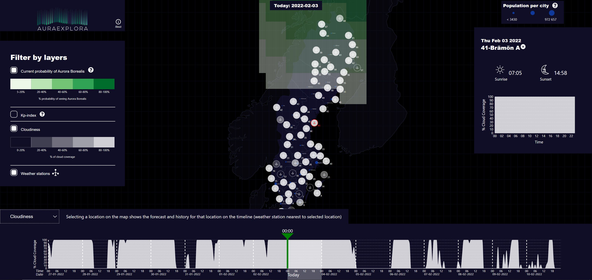

AuraExplora
Duration:
Collaborators: Adam Cerven, Haris Vidimlic, Solbritt Gateman, Wenjia Chen
My role in the project was to preprocess and convert the data into an appropriate format, which was done using Python. I also worked on the frontend development of the tool and among other things developed the bottom timeline slider and chart with the help of React and d3.js.